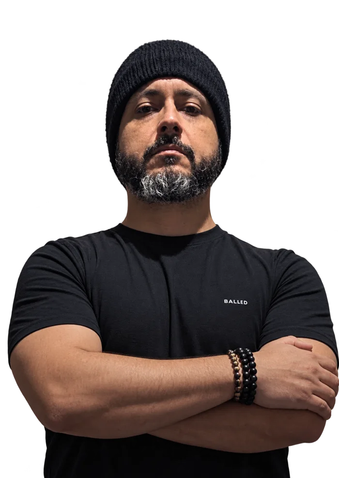

Alex Vitor
Baixo · Fundador
Mineiro e fundador da Fúria Mineira. Criou a banda em Montes Claros com o propósito de fazer da música uma carreira.
Músicos de origens diferentes, com o mesmo objetivo: viver de música.
Baixo · Fundador
Mineiro e fundador da Fúria Mineira. Criou a banda em Montes Claros com o propósito de fazer da música uma carreira.

Guitarra
Mineiro, faz parte da formação que levou a base da banda para Curitiba. Bio completa em breve.
Vocal
Natural de Santa Catarina e moradora de Curitiba, foi escolhida para a nova fase da banda. Bio completa em breve.
Vaga aberta
Procuramos um(a) parceiro(a) de projeto para trabalhar, ensaiar, gravar, fazer shows e crescer com a banda.